世锦赛128分钟取得胜利，混混VS坦克世界级的经典对局
#1 世锦赛128分钟取得胜利，混混VS坦克世界级的经典对局作者：掌棋宣传员 发表时间：2011-8-8 10:32:55
经典对局分析2（本人原创）作者：没事下下棋 2011-08-07 12:28
前记：北京时间2011年8月6日晚，在瑞典，在五子棋世锦赛AT组比赛的赛场上，一盘令人拍案惊奇大呼过瘾的经典神作诞生了……观赛之后，经过复盘和深入解读，我对该对局的感想，除了佩服，还是佩服，是以不写不快！奈何本人文笔拙棋艺微，不当之处，只能请诸位看客海涵了。另，本人并非对局者，如果有些细节描写与日后对局者的自战棋评有出入，则再正常不过，并且，一切以对局者的自战棋评为准。
对局背景：第12届五子棋世界锦标赛AT组比赛第5轮
对局者：黄金贤（黑） VS 图奈特（白）
规则：山口规则；开局情况、是否交换、打点情况均未知
言归正传，进入正题。
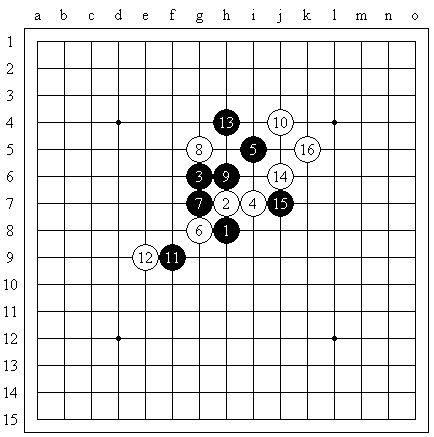
［ 黄药师 于 2011-8-8 11:14:07 时奖励此帖[金币加 100 威望加1］
［ 第五象限 于 2011-8-8 11:19:24 时花20金币送鲜花一朵］
［ 蓝天蓝 于 2011-8-8 11:51:10 时花20金币送鲜花一朵］
［ 蓝天蓝 于 2011-8-8 11:51:17 时花20金币送鲜花一朵］
［ 蓝天蓝 于 2011-8-8 11:51:20 时花20金币送鲜花一朵］
［ 蓝天蓝 于 2011-8-8 11:51:26 时花20金币送鲜花一朵］
［ 蓝天蓝 于 2011-8-8 11:51:28 时花20金币送鲜花一朵］
［ 岑小鱼 于 2011-8-8 13:14:07 时花20金币送鲜花一朵］
#2 Re:世锦赛128分钟取得胜利，混混VS坦克世界级的经典对局作者：掌棋宣传员 发表时间：2011-8-8 10:33:26
图1所示，即为该对局的前16手。由于本人谱盲，因此无法对前14手说出个子丑寅卯，只得略过。本盘真正的精彩、神奇之处，是从15、16手之后开始的。你能想象到，16手之后，黑棋已经必胜了吗？

#3 Re:世锦赛128分钟取得胜利，混混VS坦克世界级的经典对局作者：掌棋宣传员 发表时间：2011-8-8 10:33:59
如图2，实战中的17手落在i6，解禁做杀。白棋此时主要有两种防守方法：e6或f6。下面先说e6。
#4 Re:世锦赛128分钟取得胜利，混混VS坦克世界级的经典对局作者：掌棋宣传员 发表时间：2011-8-8 10:34:24
如果18-e6，则19向下活三，20显然只能守在下端。之后，21做杀。此时，白棋只有e8防点值得一说，其余防点均太弱。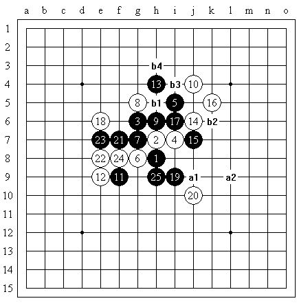
#5 Re:世锦赛128分钟取得胜利，混混VS坦克世界级的经典对局作者：掌棋宣传员 发表时间：2011-8-8 10:34:40
图4如图4，由于22手之后白棋有反冲四棋形的牵制，因此黑23没有必要在f6去做表面化的冲四活三。图4中，23手先阻断白棋的跳三，之后，白24防守，黑25做棋。至此，黑棋在盘面主要有这些东西：a1，a2连续两个冲四之后，可杀；b1，b2，b3，b4之后，也可杀。其中，b1为两条攻杀路线的共防点。如果白棋采用共防点之外的防守，则黑棋可以直接通过另外的那条攻杀路线简单取胜。那么，如果白24防于共防点b1呢？
#6 Re:世锦赛128分钟取得胜利，混混VS坦克世界级的经典对局作者：掌棋宣传员 发表时间：2011-8-8 10:35:48
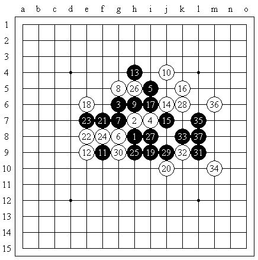
图5
如图5，黑棋只须如此连攻，便不难胜。
总的来说，这个18，其实难度并不大，并且，实战中，白棋也并没有选择这个18。真正高难度的，是白棋在实战中的18手——f6。
#7 Re:世锦赛128分钟取得胜利，混混VS坦克世界级的经典对局作者：掌棋宣传员 发表时间：2011-8-8 10:36:20
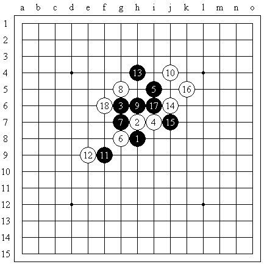
图6
如图6，实战18之后，黑棋如果在上方攻击，肯定收效甚微——白棋在左右两侧的包围使得黑棋不可能在上方占到实质性的便宜；而虽然下方空间广阔，黑棋却不能在下方任意拓展——白棋在右上具有先手，黑棋只要乱走，白棋不需怎么费力就能成杀。面临如此局面，黑棋是怎么做的呢？
#8 Re:世锦赛128分钟取得胜利，混混VS坦克世界级的经典对局作者：掌棋宣传员 发表时间：2011-8-8 10:36:53
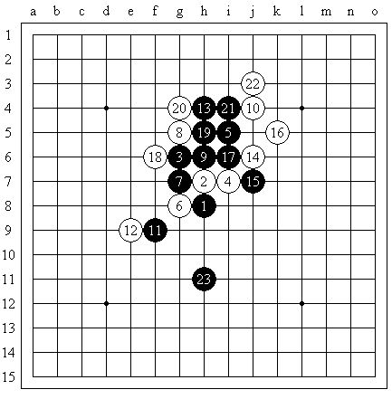
图7
现在，我们可以初步欣赏一下黄金贤运作局面的水平。如图7，黑棋连续走了19、21两手活三。这里需要注意的是，白棋的20和22都不能挡在另一端！因为无论哪一手挡在另一端，黑棋均会马上VCF成杀。
22手之后，黑棋借用e8点四三杀的牵制，将23手落在下端，成功的将攻击材料布置在了最想施展进攻的区域。
通过19、21两手铺垫，最终创造条件将23落在最需要的位置，这是多么流畅的借用转移手段啊！
#9 Re:世锦赛128分钟取得胜利，混混VS坦克世界级的经典对局作者：掌棋宣传员 发表时间：2011-8-8 10:37:32
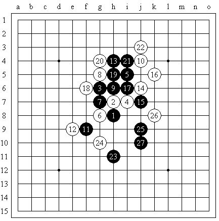
图8
实战中的24手是别无选择的——如果将24手换做其他防点，黑棋将有极大的空间和极丰富的连接手段，极易取胜。之后，25进攻，26同样别无选择。
面对白棋的最强防，黑27选择了一手极强的做棋。至此，黑棋攻势强盛，白棋面临着极大的防守压力。
此时，假如白棋的防守不到位，会有什么后果呢？
#10 Re:世锦赛128分钟取得胜利，混混VS坦克世界级的经典对局作者：掌棋宣传员 发表时间：2011-8-8 10:37:58
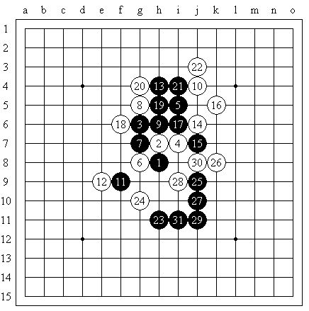
图9
#11 Re:世锦赛128分钟取得胜利，混混VS坦克世界级的经典对局作者：掌棋宣传员 发表时间：2011-8-8 10:38:26
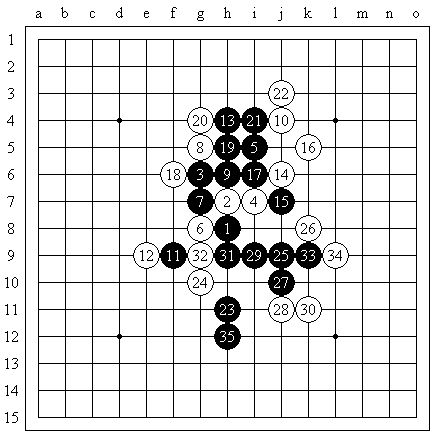
图10
如上面两图所示，如果白棋马虎防守，黑棋会很轻易的撕开白棋的防线。
#12 Re:世锦赛128分钟取得胜利，混混VS坦克世界级的经典对局作者：掌棋宣传员 发表时间：2011-8-8 10:38:58
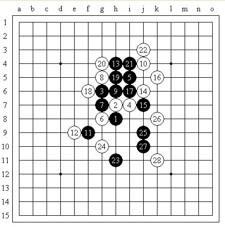
图11
实战中采用的28手是强度最高的防守。这个防守强在何处呢？——首先，显而易见的，i9点的冲四进攻没了；其次，26和28对外围形成了包围，并随时可能形成反活三，牵制黑棋；再次，28的存在对11路横线也起到了一定的限制、阻挡作用。
那么，面对最强的28手，黄金贤又将如何去进攻呢？
#13 Re:世锦赛128分钟取得胜利，混混VS坦克世界级的经典对局作者：掌棋宣传员 发表时间：2011-8-8 10:39:27
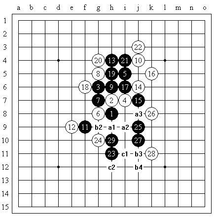
图12
这便是黄金贤的29手。这一手带来的攻击线路实在是太丰富了！即使是随便找找，都能找出一大堆的杀：a1，a2，a3可以杀；a1，b2，b3，b4也可以杀；c1做一步棋，又会带来c2或b4的一子双杀……白棋此时真的要崩溃了！
#14 Re:世锦赛128分钟取得胜利，混混VS坦克世界级的经典对局作者：掌棋宣传员 发表时间：2011-8-8 10:39:55
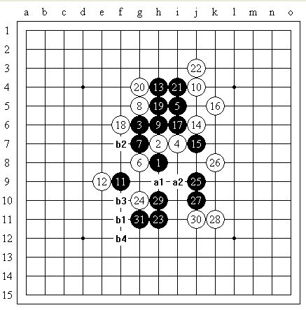
图13
如图13，实战白30落于j11。黑31继续做棋——依然很强！此时，黑棋a1，a2可杀，b1，b2，b3，b4也可杀，并且，棋盘的整个下端全部可供黑棋用于狂攻。白棋离失败已经越来越近了。
#15 Re:世锦赛128分钟取得胜利，混混VS坦克世界级的经典对局作者：掌棋宣传员 发表时间：2011-8-8 10:40:38
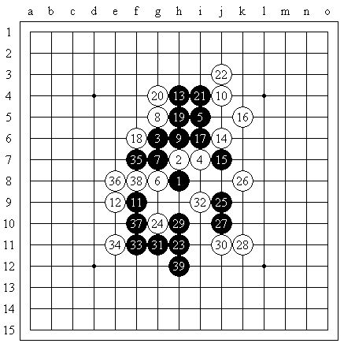
全谱
实战的最后阶段，白棋草草抵抗了几手后，不等黑棋走完整个VCF，便投子认输了。
#16 Re:世锦赛128分钟取得胜利，混混VS坦克世界级的经典对局作者：掌棋宣传员 发表时间：2011-8-8 10:40:54
写到这里，有一点必须说明一下：整个这条漂亮的攻杀，并不是黄金贤边走边算的，而是，黄金贤在最初的17手时（甚至很可能是更早的15手），就几乎将整个攻杀路线计算穷尽！赛后，据黄金贤自己说，算到27手之后，他只有零星的几个点没算得太清楚（仅仅是没算得太清楚）；而算得不是太清楚的棋，他是在29手时重新验算了一遍，确定无误之后，才继续落子杀下去的。朋友们啊，请返回去看看讲解吧：从图2开始一直到终局前的图13，整个攻杀过程，包含了多少计算量啊！！这里面，有做棋（而且还是连续的做棋）、有分支（分支量还很大），并且，就长度（深度）本身来说，整个攻杀路线也是相当之长。而黄金贤仅仅只有区区几个点没有算清楚，这，是何等恐怖的计算力啊！！#17 Re:世锦赛128分钟取得胜利，混混VS坦克世界级的经典对局作者：被感动的人 发表时间：2011-8-8 11:39:14
沙发
#18 Re:世锦赛128分钟取得胜利，混混VS坦克世界级的经典对局作者：山东歪歪 发表时间：2011-8-8 11:41:26
=======上图对应的爱五子棋谱代码如下，以便你拆解：========
h8h9g10i9i11g8g9g11h10j12f7e7h12j10j9k11i10e10i7j6f9e8e9f8h7k8
======================================================
图四白26防于K8怎么杀？
#19 Re:世锦赛128分钟取得胜利，混混VS坦克世界级的经典对局作者：蓝天蓝 发表时间：2011-8-8 11:42:52
又忘记换自己的账号了
#20 Re:Re:世锦赛128分钟取得胜利，混混VS坦克世界级的经典对局作者：小元 发表时间：2011-8-8 11:57:46
引用：往上嵌个四，上面做一手就杀了
原文由 山东歪歪 发表于 2011-8-8 11:41:26 :
=======上图对应的爱五子棋谱代码如下，以便你拆解：========
h8h9g10i9i11g8g9g11h10j12f7e7h12j10j9k11i10e10i7j6f9e8e9f8h7k8
======================================================图四白26防于K8怎么杀？
#21 Re:世锦赛128分钟取得胜利，混混VS坦克世界级的经典对局作者：黑白之巅 发表时间：2011-8-8 13:01:09
嘿嘿，宣传员辛苦搬这里来啦
#22 Re:世锦赛128分钟取得胜利，混混VS坦克世界级的经典对局作者：伤情路 发表时间：2011-8-8 13:07:49
混混确实太牛了
#23 Re:世锦赛128分钟取得胜利，混混VS坦克世界级的经典对局作者：岑小鱼 发表时间：2011-8-8 13:14:01
=======上图对应的爱五子棋谱代码如下，以便你拆解：========
h8h9g10i9i11g8g9g11h10j12f7e7h12j10j9k11i10e10i7j6h7
======================================================
这个顺序可能简洁一点
#24 Re:世锦赛128分钟取得胜利，混混VS坦克世界级的经典对局作者：岳麓小棋后 发表时间：2011-8-8 20:08:24
LZ留点给混混写自评#25 Re:世锦赛128分钟取得胜利，混混VS坦克世界级的经典对局作者：兔子哥哥 发表时间：2011-8-9 19:45:17
呵呵解说太吹嘘了一点，走顺了而已。相信论坛很多人也能算个大概。不过还是恭喜混混，砍了坦克#26 Re:世锦赛128分钟取得胜利，混混VS坦克世界级的经典对局作者：茗弈妙手 发表时间：2011-8-11 8:38:34
解说的吹嘘和讲解的过分细致是因为原作者对本文的定位是科普文，也就是说，本文面向的对象不是高手群体而是基层群体。如果原作者知道本文要被转帖到爱五子棋，他怎敢这么写啊？要问我是谁，我就是原作者。。。#￥%……&
献大丑了，勿怪勿怪哈
［ 天籁之琴 于 2011-8-11 9:26:50 时花20金币送鲜花一朵］
［ 掌棋宣传员 于 2011-8-11 10:48:43 时花20金币送鲜花一朵］
［ 掌棋宣传员 于 2011-8-11 10:48:44 时花20金币送鲜花一朵］
［ 掌棋宣传员 于 2011-8-11 10:48:44 时花20金币送鲜花一朵］
［ 掌棋宣传员 于 2011-8-11 10:48:45 时花20金币送鲜花一朵］
［ 掌棋宣传员 于 2011-8-11 10:48:47 时花20金币送鲜花一朵］
#27 Re:世锦赛128分钟取得胜利，混混VS坦克世界级的经典对局作者：自来水 发表时间：2011-8-11 9:57:45